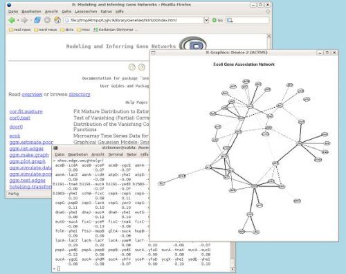

GeneNet
GeneNet
Modeling and Inferring Gene Networks
| What is it? |
GeneNet is an R package for learning high-dimensional dependency networks from genomic data (e.g. gene association networks). The current version of GeneNet also allows to assign putative directions to edges in the network (see arabidopsis example). This is a screenshot of GeneNet running in R on GNU/Linux:  The picture shows a sparse graphical Gaussian model for 102 genes inferred from a microarray data set with 9 data points (detailed view). See also an R News article about GeneNet. |
| Authors: |
The GeneNet package is maintained by Korbinian Strimmer (email). The methods and the code was jointly developed by |
| Examples and Documentation: |
The following example scripts illustrate some of the functionality of GeneNet:
All methods available in GeneNet are described with examples in their respective help pages - please browse the online Manual (pdf file) for an overview. |
| Papers: |
There are a number of papers describing the methods available in GeneNet:
|
| License: |
GeneNet is distributed under the terms of the GNU GPL version 3 (or any later version). |
|
Requirements: |
GeneNet requires a recent version of the R program (at least version 3.0.2). The current version 1.2.13 of GeneNet requires installation of three other packages available from CRAN: corpcor, longitudinal, fdrtool. For plotting network structures GeneNet uses the graph and Rgraphviz R packages from Bioconductor. In addition, the original graphviz software may also be used (via dot files). |
|
Download and Installation: |
The current release is GeneNet version 1.2.13. It can be downloaded from CRAN:
For installation proceed as described in the documentation that accompanied your version of R. For example, under Linux type in the command shell: R CMD INSTALL GeneNet_1.2.13.tar.gz If your computer is connected to the internet you may also install the GeneNet package by typing at the R prompt: install.packages("GeneNet", dependencies = TRUE) |
| Release History: |
The changes between subsequent releases of GeneNet are documented in the release history. The current version is GeneNet 1.2.13. Previous releases of GeneNet can also be downloaded from the GeneNet archive. Note however that these versions are obsolete and only provided for reference purposes. Prior to its release as a standalone package, GeneNet was part of the GeneTS package. Hence, for older versions please check the GeneTS page. |
| Acknowledgments: |
Development of GeneNet was supported by an Emmy Noether research grant of the DFG. |